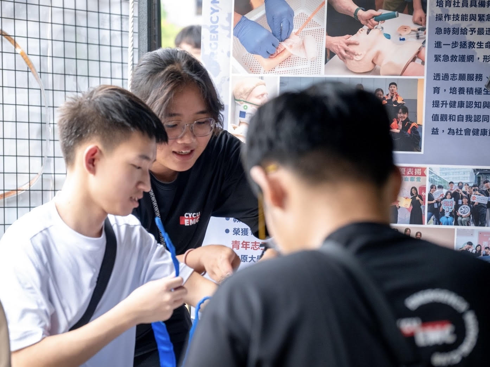
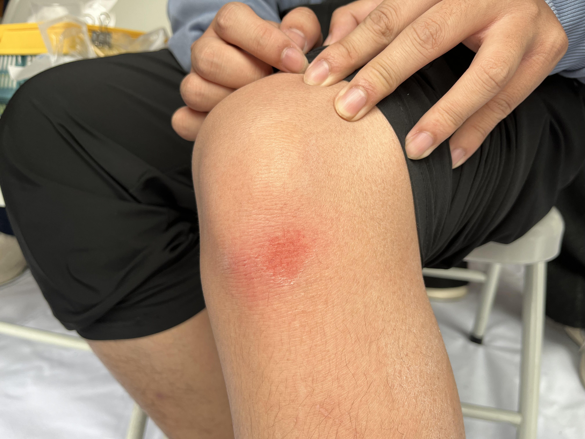
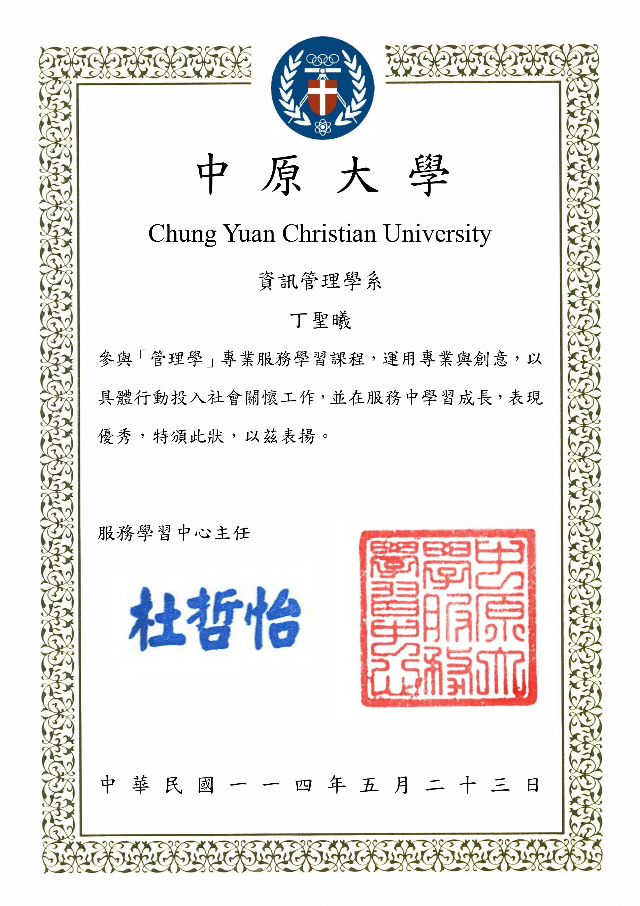
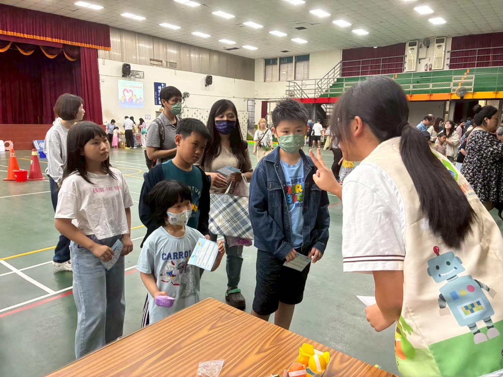
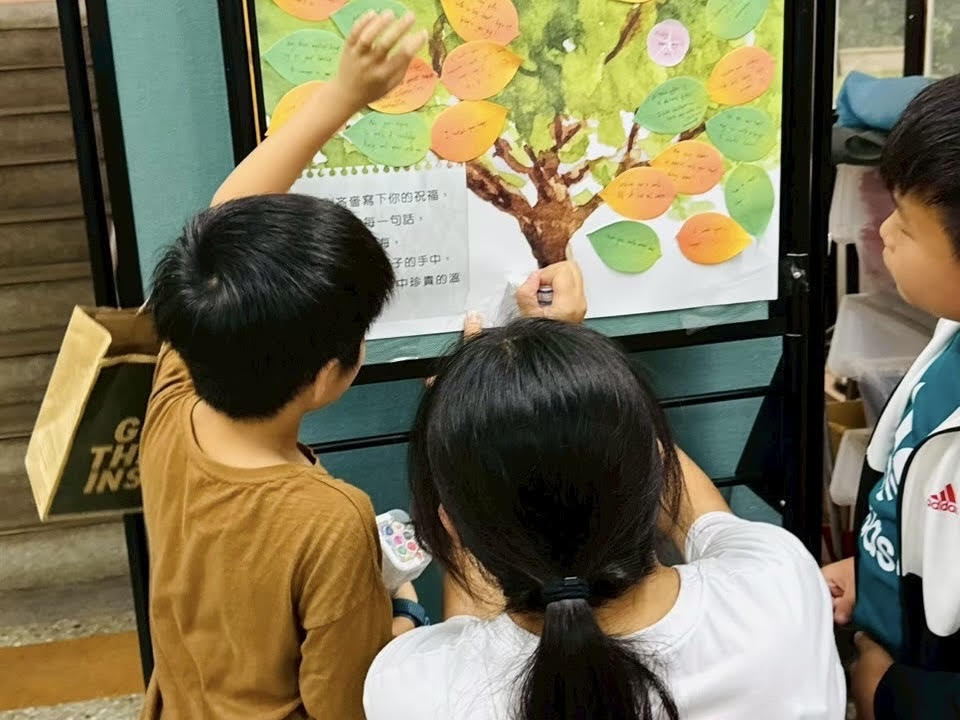
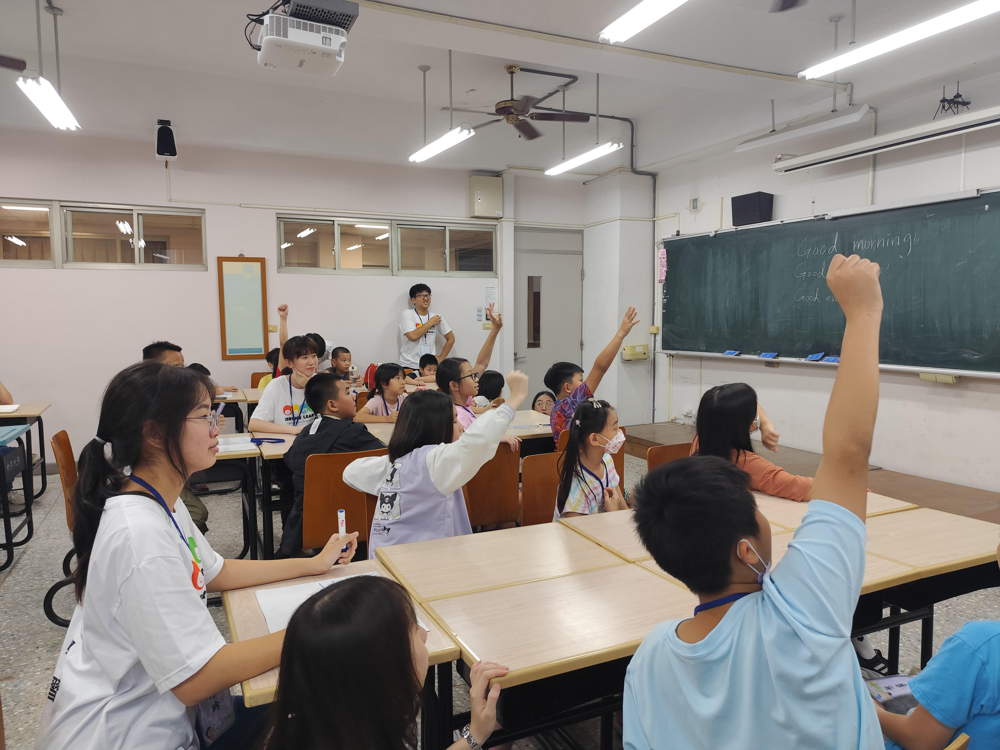
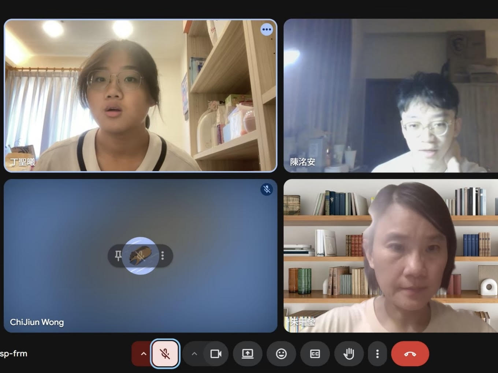
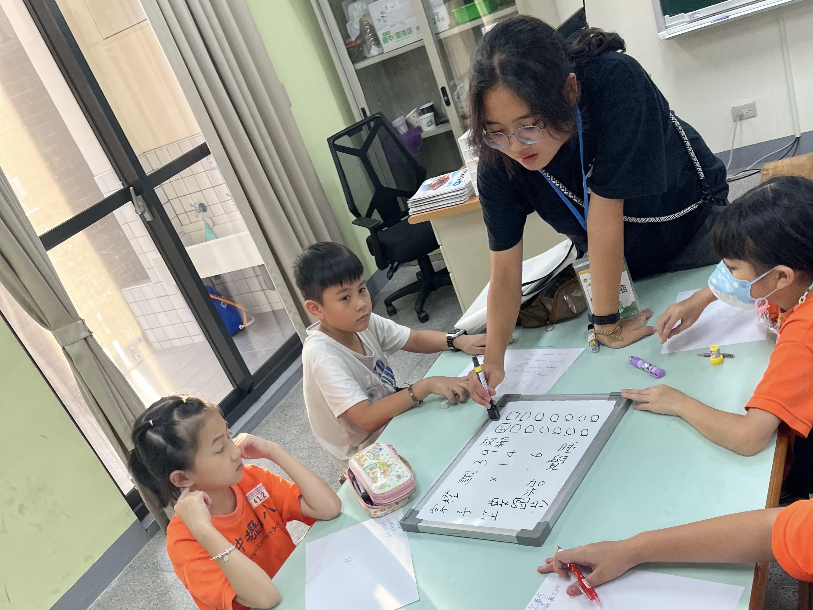
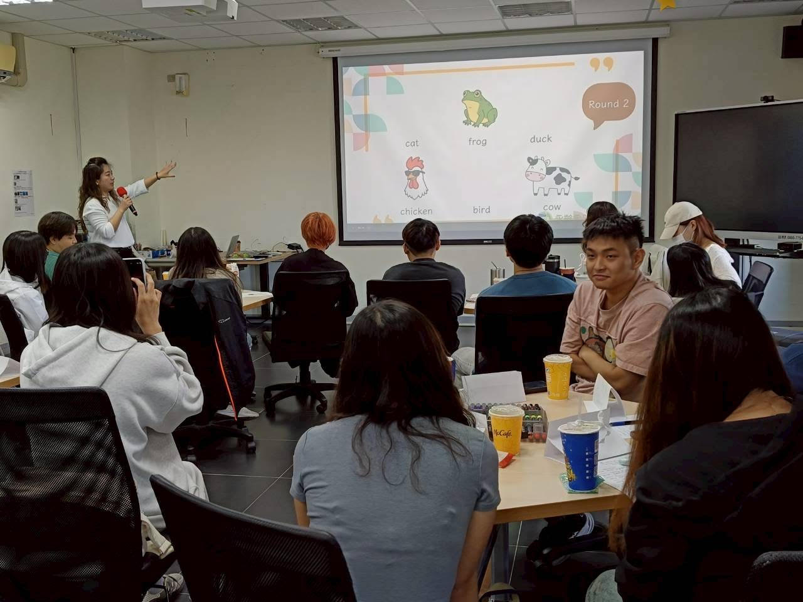

| 姓名 | 丁聖曦 Cynthia | 個性 | thinking | 大學 | 中原大學 | ||||
| 生日 | 95年04月20日 | 優點 | thinking | 科系 | 資訊管理 | ||||
| 年齡 | 19歲 | 缺點 | 小拖延 | 高中 | 大直高中 | ||||
| 血型 | A型 | 特質 | thinking | 居住 | 台北市 | ||||
| 星座 | 牡羊座 | 興趣 | 聽音樂 | 戶籍 | 台中市 | ||||
一天一蘋果，醫生遠離我🍎
github github github github github github github github github
我的家人和朋友
程式技能 學習進度
Python 60%
Java 70%
HTML 50%
CSS 50%
C++ 40%
專業技能
大一上
社團活動-緊急醫療救護社
現任急救社執行秘書

擔任小運會志工
在社團博覽會被吸引，聽完介紹後決定加入急救社！從幹部和講師們開的社團課學習到很多以前從來沒有接觸過的急救知識，後來也跟著參與了運動會以及捐血的志工服務，到大二上自己也成為了幹部裡的一員！
大一下
課程活動-管理學

擔任闖關遊戲關主
在社團博覽會被吸引，聽完介紹後決定加入急救社！從幹部和講師們開的社團課學習到很多以前從來沒有接觸過的急救知識，後來也跟著參與了運動會以及捐血的志工服務，到大二上自己也成為了幹部裡的一員！
其他活動-服務學習中心柬埔寨隊

募集物資和娃娃

舉辦英文營隊
在社團博覽會被吸引，聽完介紹後決定加入急救社！從幹部和講師們開的社團課學習到很多以前從來沒有接觸過的急救知識，後來也跟著參與了運動會以及捐血的志工服務，到大二上自己也成為了幹部裡的一員！
大二上
課程活動-PSBH國際問題解決松
體驗輪椅壘球
在社團博覽會被吸引，聽完介紹後決定加入急救社！從幹部和講師們開的社團課學習到很多以前從來沒有接觸過的急救知識，後來也跟著參與了運動會以及捐血的志工服務，到大二上自己也成為了幹部裡的一員！
專案-統計學AI評分系統

專案技術組開會
在社團博覽會被吸引，聽完介紹後決定加入急救社！從幹部和講師們開的社團課學習到很多以前從來沒有接觸過的急救知識，後來也跟著參與了運動會以及捐血的志工服務，到大二上自己也成為了幹部裡的一員！
工作經歷-永齡希望小學課輔老師

中壢國小英文課輔老師

討論備課相關事宜
在社團博覽會被吸引，聽完介紹後決定加入急救社！從幹部和講師們開的社團課學習到很多以前從來沒有接觸過的急救知識，後來也跟著參與了運動會以及捐血的志工服務，到大二上自己也成為了幹部裡的一員！
{kind=link}
主題參考自以下歌曲